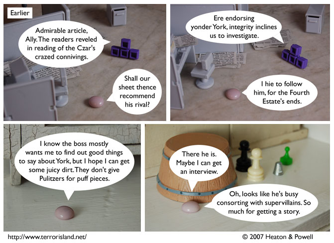

Strip #220
— Wednesday, November 7, 2007
However, they do give Pulitzers for puff pastries.
Notes, Thoughts, &c.
Ben’s Notes
Ally’s boss is named Blorgomanxome Sudafed. Usually Lewis and I discuss ideas for character names with each other before deciding on them, but I couldn’t resist this time. I’m sure he’ll approve of Blorgomanxome Sudafed.
Lewis’s Notes
We didn’t originally plan it this way, but it looks like Ally’s defining trait is being abysmally bad at investigative reporting. She’s aces at interviews though.